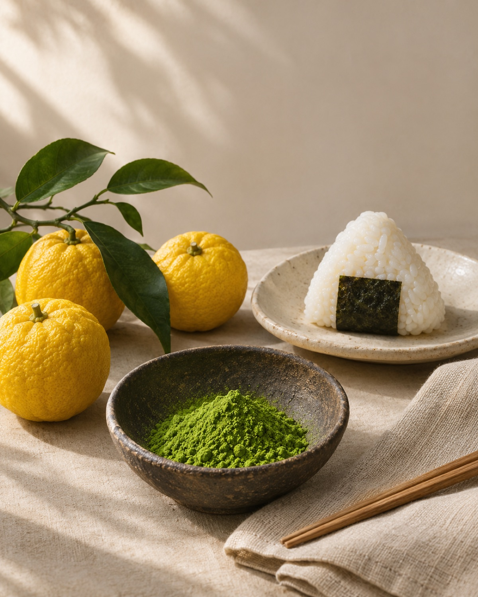

A TASTE OF WHAT’S TO COME日本の魅力を、もっと身近に。
The quality
of Japan.
Closer to home.日本の上質を、
アメリカの
日常へ。
Extraordinary ingredients. Thoughtful craftsmanship.
A culture of care in every detail.
We’re helping America experience the quality of Japan, starting with food.
豊かな食材。丁寧なものづくり。
細部にまで宿る、つくり手の想い。
私たちは「食」を通じて、日本の上質とその背景にある文化をアメリカへ届けていきます。

Good things deserve
to travel.いいものとの出会いに、
国境はいらない。
Japan’s food culture is full of things worth sharing: care for ingredients, respect for tradition, and the pursuit of something better.
Izumo is being built to bring that spirit to the United States — connecting Japanese producers with people who appreciate the story behind what they enjoy.
素材を大切にする心。受け継がれてきた技。よりよいものを追い求める姿勢。日本の食文化には、世界と分かち合いたい魅力があります。
Izumoは、その価値をアメリカへ届けるために歩み始めました。日本のつくり手と、食の背景にある物語を大切にする人々をつないでいきます。
FROM JAPAN, WITH CARE日本から、想いを込めて。
A new connection
is taking shape.ここから、
新しいつながりを。
We’re just getting started. Thank you for being part of the journey.私たちの挑戦は、まだ始まったばかり。
この出会いを、次の一歩へ。